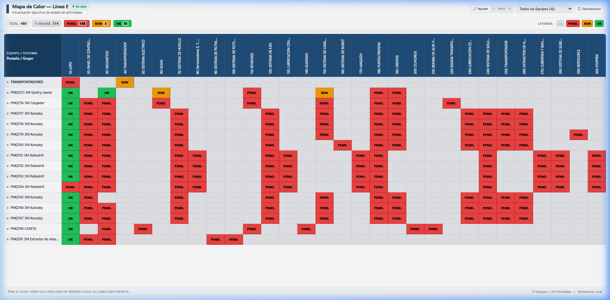
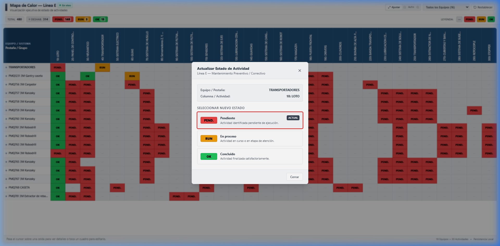

1
Acceso a la Plataforma y Compatibilidad
La plataforma no requiere instalación de software ni descargas desde tiendas de aplicaciones. Se ejecuta directamente desde cualquier navegador web moderno (Google Chrome, Safari, Edge, Firefox, Samsung Internet) ingresando al enlace oficial:
🌐 Enlace Oficial de Producción
https://raptort77.github.io/KOLBEN-BRP/
— Guarda este enlace en los marcadores de tu navegador o agrégalo a la pantalla de inicio de tu smartphone o tablet para acceder en 1 toque.
2
Estructura de la Matriz y Códigos de Estado
La matriz reproduce fielmente el plano técnico de la Línea E, compuesto por 16 filas de equipos (Transportadores, PMQ1231 Gantry OP05, PMQ756 Cargador, Kanzaky OP10 a OP80, Robodrills OP50/OP60, Caseta y Extractor) y 30 columnas de actividades agrupadas del código 10 al 300 (total exacto: 480 celdas).
| Semáforo |
Nombre del Estado |
Criterio de Cálculo Oficial |
Acción Requerida |
| PEND. |
Pendiente (Rojo #EF4444) |
0 casillas aplicables concluidas. La tarea no ha iniciado. |
Iniciar labores e ingresar al checklist. |
| RUN |
En Proceso (Ámbar #F59E0B) |
Entre 1 y N-1 casillas aplicables concluidas. Mantenimiento activo. |
Continuar las tareas restantes del grupo. |
| OK |
Concluido (Verde #22C55E) |
El 100% de tareas aplicables están marcadas OK. |
Actividad completada y validada en el turno. |
| NA |
No Aplica (Todas NA) (Gris #E5E7EB) |
Todas las tareas del grupo marcadas como NA (casilla editable). |
La casilla se torna gris y se ignora del cálculo de pendientes. |
| — |
Deshabilitado (Gris #E5E7EB) |
Intersección no aplicable para ese equipo según el PDF oficial. |
Bloqueada por diseño estructural; no requiere acción. |

Fig 1: Selección de equipo en la columna izquierda fija (Indicador dorado 'Activa').

Fig 2: Ventana emergente ejecutiva con checklist numerado y casillas OK y NA.
📌 Paneles Congelados Bidimensionales (Freeze Panes 2D)
Al desplazarte horizontal o verticalmente en teléfonos móviles o PC, la columna de equipos siempre permanece fija a la izquierda y los encabezados de actividades permanecen fijos arriba, garantizando que nunca pierdas de vista la coordenada que estás editando.
3
Procedimiento Paso a Paso para Actualizar Actividades
Sigue estos 4 pasos sencillos para registrar el avance de cualquier mantenimiento. Los cambios se difunden al instante a todos los supervisores y pantallas de la planta:
1
Paso 1: Seleccionar el Equipo de Trabajo
En la columna izquierda fija, toca o haz clic sobre el nombre del equipo a intervenir (ej. PMQ756 3M Cargador o PMQ759 3M Kanzaky OP30). La fila se resaltará en azul marino con una etiqueta dorada que indica ACTIVA.
2
Paso 2: Abrir la Casilla de Actividad
Toca la celda activa que deseas actualizar (ej. columna 10: LOTO o 30: Neumático). Inmediatamente se desplegará la Ventana Emergente del Checklist Oficial perteneciente a ese grupo con sus ítems técnicos normalizados (ej. 10.1, 10.2...).
3
Paso 3: Marcar los Checkboxes (OK / NA)
Para cada tarea del checklist dispones de dos casillas de control independientes:
- Casilla OK (Verde): Márcala al concluir satisfactoriamente la verificación física.
- Casilla NA (No Aplica): Márcala si esa tarea específica no aplica para esa intervención. Al marcar NA, el renglón se tacha y se excluye del porcentaje y del cálculo del semáforo.
- Acciones Rápidas: Utiliza los botones inferiores "Marcar OK" (completa todas las tareas activas) o "Desmarcar" para reiniciar rápidamente.
4
Paso 4: Sincronización Automática Instantánea
No existe un botón "Guardar". Cada vez que tocas una casilla, el estado se guarda al instante en la nube (< 50 milisegundos) y se refleja en los teléfonos de todo el equipo de mantenimiento sin necesidad de recargar la página.
⚠️ Regla de Exclusividad por Coordenada (Fila × Columna)
Cada casilla de la matriz es estrictamente independiente. Si marcas las tareas de TRANSPORTADORES × 10 LOTO, estas NO alteran las tareas de PMQ756 Cargador × 10 LOTO. Cada máquina mantiene su propio registro histórico exclusivo.
💡 Indicador de Estado en Cabecera
En la parte superior de la pantalla verás siempre el indicador:
🟢 En vivo. Esto confirma que tu dispositivo está conectado al canal WebSocket de alta velocidad. Si se muestra ⚪ Local, los cambios se almacenan en tu memoria local y se enviarán automáticamente en cuanto se restablezca la señal.
4
Uso en Teléfonos Inteligentes y Tablets
La plataforma está 100% optimizada para uso en piso de producción con teléfonos celulares y tablets rugerizadas:
Modal Centrado con Fondo Oscuro Protector
Al tocar cualquier celda desde tu teléfono, la ventana se despliega como un diálogo modal centrado con fondo oscuro protector. Esto evita que la ventana se corte con los bordes de la pantalla o con las barras de navegación de Android o iOS.
4 Formas de Cerrar la Ventana en Cualquier Dispositivo:
👆
Tocar Fuera
Toca en cualquier parte oscura del fondo.
✖️
Botón "X"
En la esquina superior derecha.
🔘
Botón Cerrar
Al pie de la ventana emergente.
⌨️
Tecla Esc
Si utilizas teclado físico o tablet.
5
Emisión de Informes, Preguntas Frecuentes y Créditos
¿Cuál es la diferencia entre "Imprimir Dashboard" e "Imprimir Informe"?
-
Imprimir Dashboard (1 Página PDF): Exporta exclusivamente el mapa de calor en una sola cuartilla apaisada (A4 Landscape) con los logotipos oficiales (KS y JI&FIX BRP), el título formal, los contadores semafóricos actuales, la matriz completa 16×30 con sus colores en tiempo real y créditos discretos al pie. Ideal para imprimir en pizarrones de piso o enviar minutas ejecutivas de 1 página.
-
Imprimir Informe (Informe Detallado Multi-página): Genera un reporte exhaustivo que incluye la matriz consolidada más el desglose técnico completo de todos los equipos y sus columnas activas, listando cada actividad individual y su estatus de casilla en vivo ([✓] Completada, [NA] No Aplica o [○] Pendiente).
¿Qué sucede si marco todas las tareas de un grupo como NA (No Aplica)?
Si todas las tareas de un grupo están marcadas como NA, esa casilla se evalúa como no aplicable para ese equipo y su estado se torna en Gris (NA, #E5E7EB). Esa casilla permanece editable y activa (puedes volver a abrir su checklist haciendo clic si deseas cambiarla), pero se excluye de las tareas obligatorias pendientes.
¿Puedo filtrar la pantalla para ver únicamente el equipo que me corresponde?
Sí. En la barra superior encontrarás el desplegable "Todos los Equipos". Al seleccionar tu máquina (ej. PMQ760 3M Kanzaky OP40), la tabla ocultará temporalmente el resto para trabajar con máxima comodidad en pantallas pequeñas.
¿Qué ocurre si dos técnicos abren la misma casilla al mismo tiempo?
Supabase Realtime resuelve los eventos por orden de llegada con latencia inferior a 50 milisegundos. Cuando el compañero marque una casilla, la verás actualizarse en tu pantalla sin tener que presionar F5 ni recargar.
Créditos Oficiales de Desarrollo y Automatización
Relación de mantenimientos preventivos Linea “E” Producto 9X3 • KOLBEN / BRP
VERSIÓN OFICIAL 2026
Jose Antonio De Jesus Galicia
dejesus.antonio@hcaa.com.mx
HC Advanced Automation S.A de C.V.
https://www.hcaa.com.mx/
Puebla, Puebla, MX